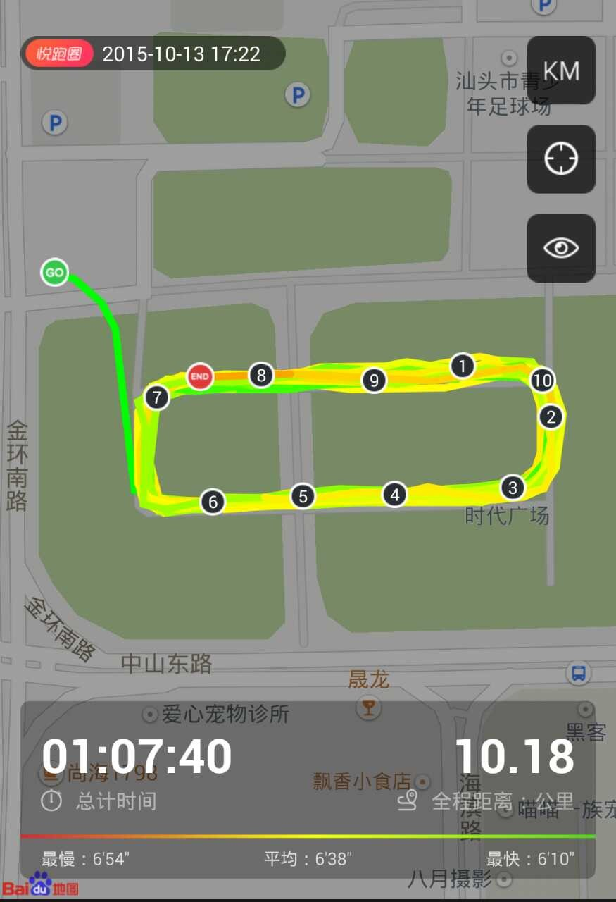
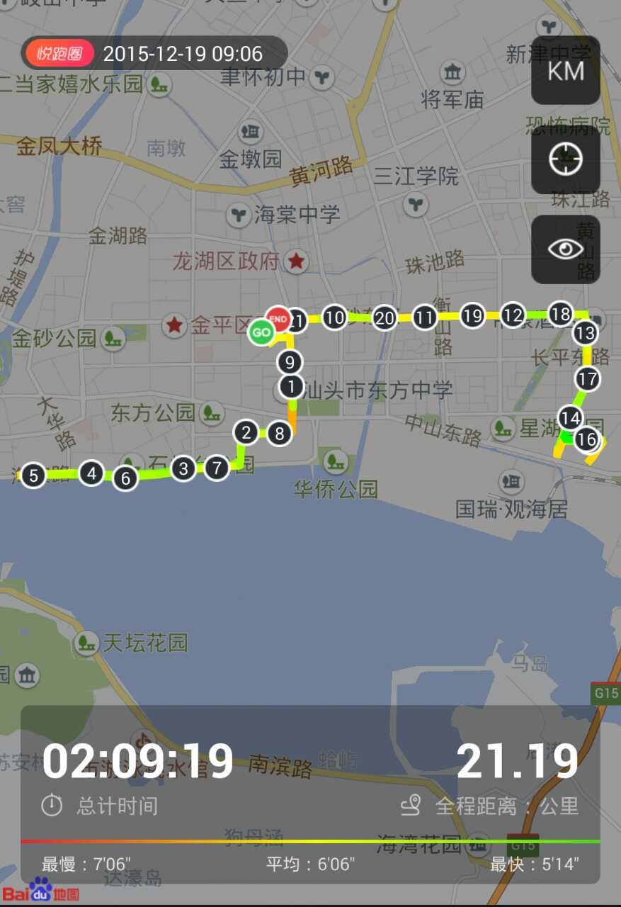
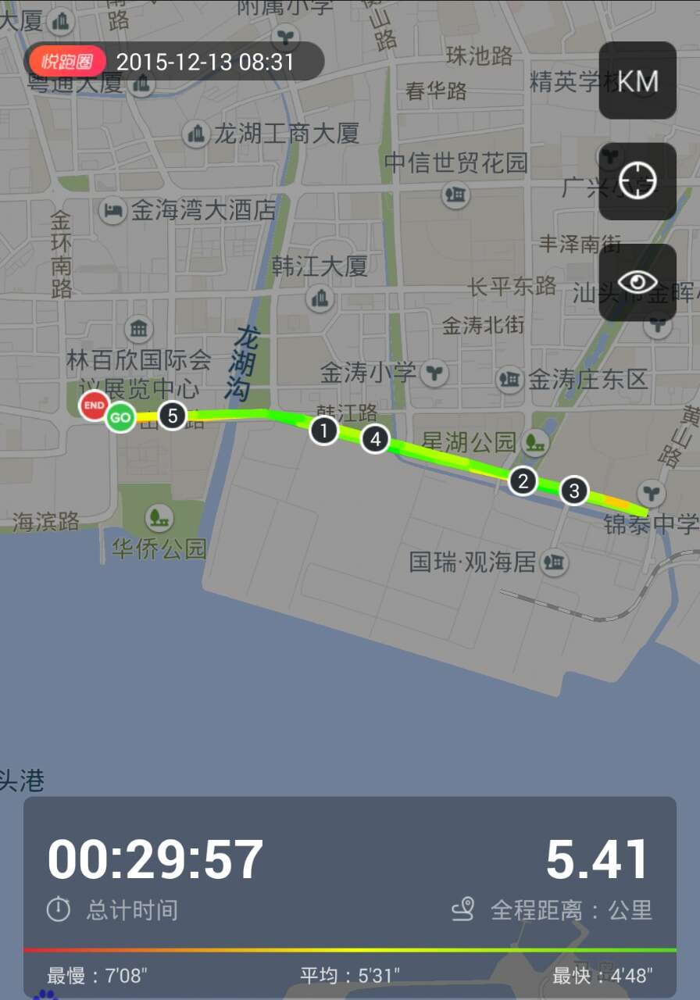
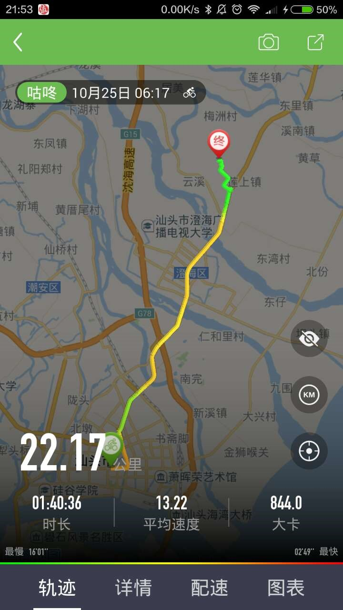
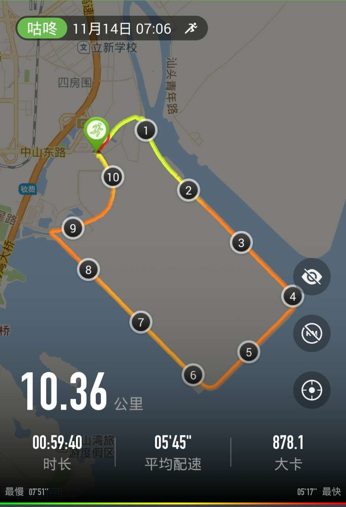
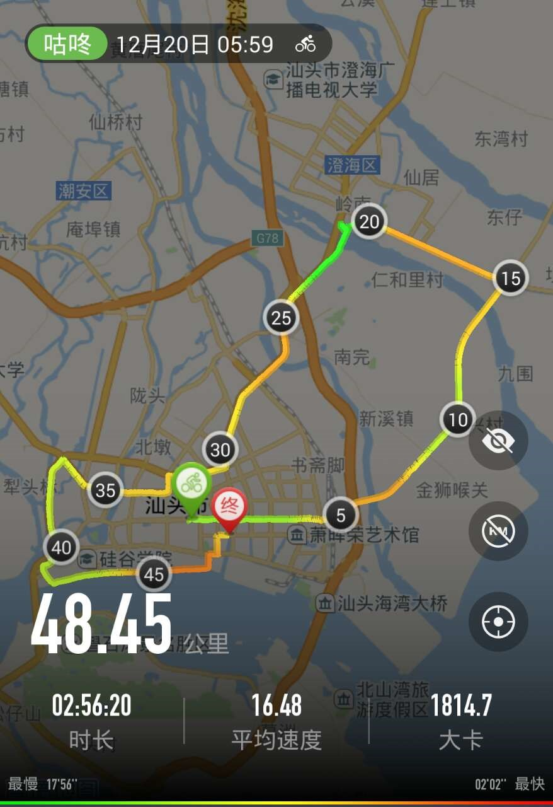
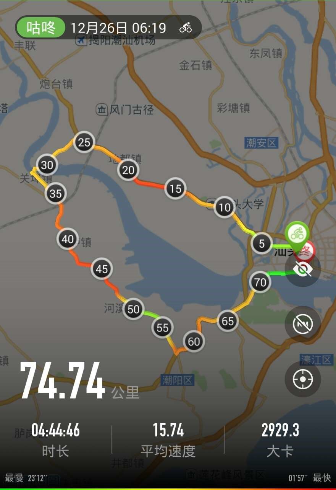

2014年虽然在老婆的支持下开始了骑行，不过由于多年未有运动，只能骑行10来公里，而且在年底还把单车丢了。
2015年3月开始花了更多的时间在运动上，骑行慢慢适应了30公里。
开始尝试骑行到周边，第一次是到梅林湖、红头船公园+加海滨路一圈、
龙湖古寨，并完成了最长的一次到潮州，来回100KM
因为骑行感觉20KM已经较轻松，晚上的时间也不能再骑行更远，于是6月开始尝试早上跑步，在10月完成了第一次10KM的跑步，12.13参加了汕头半马的mini马（5KM),12.20跑了第一次半马距离。



10月加入了奔跑人生的微信群，跟群里的黄老一起骑行到澄海塔山，并在水库跟自由人聊天，11月跟群里自由人、冰和泳不止步一起跑了东海岸，后面跟跑团的人一起再跑了一次。


跟群里的几个跑友，冰，明哥，小虾，ling和小颖时不时的一起晨跑，后来大家买了山地车时不时一起骑行完成了一次48KM的骑行并完成咕咚上的70KM活动。


15年完成了1）3500KM的骑行，一次骑行距离达100KM;
2）600KM的跑步，完成了一次半马距离的，并参加了汕头半马的mini马。